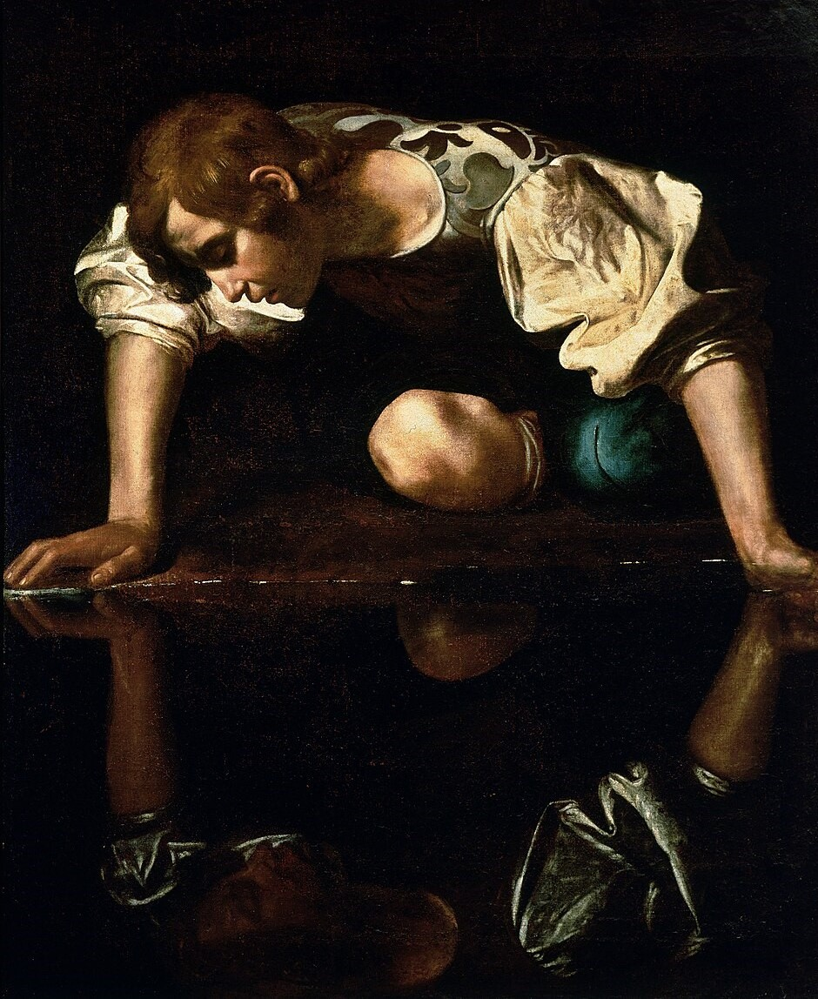
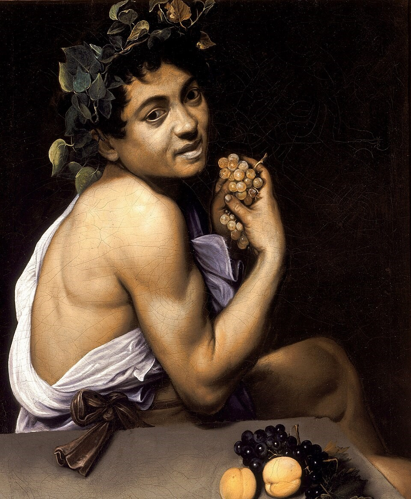
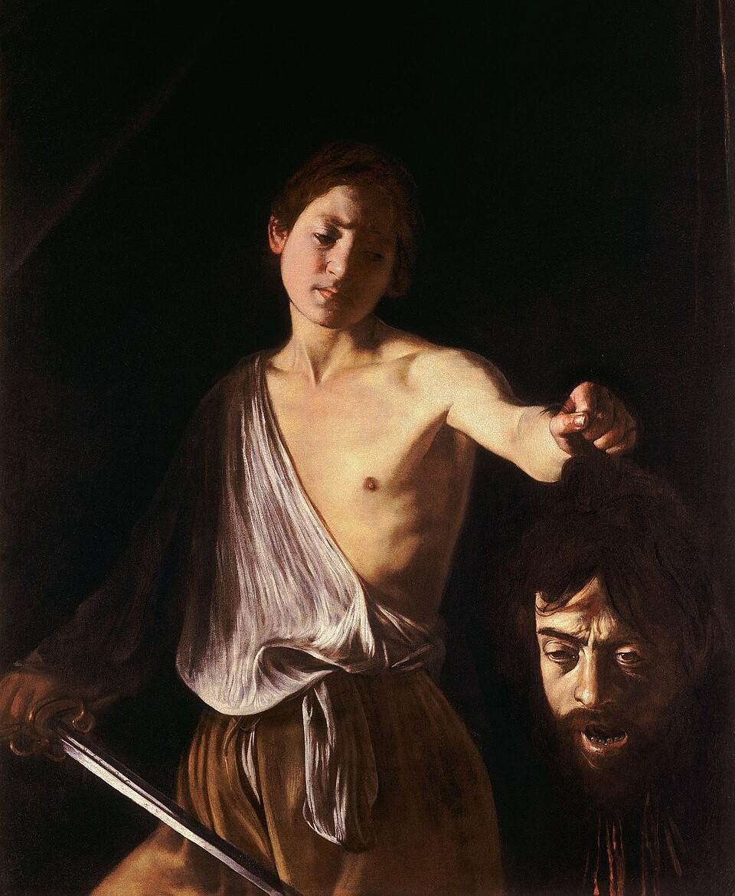
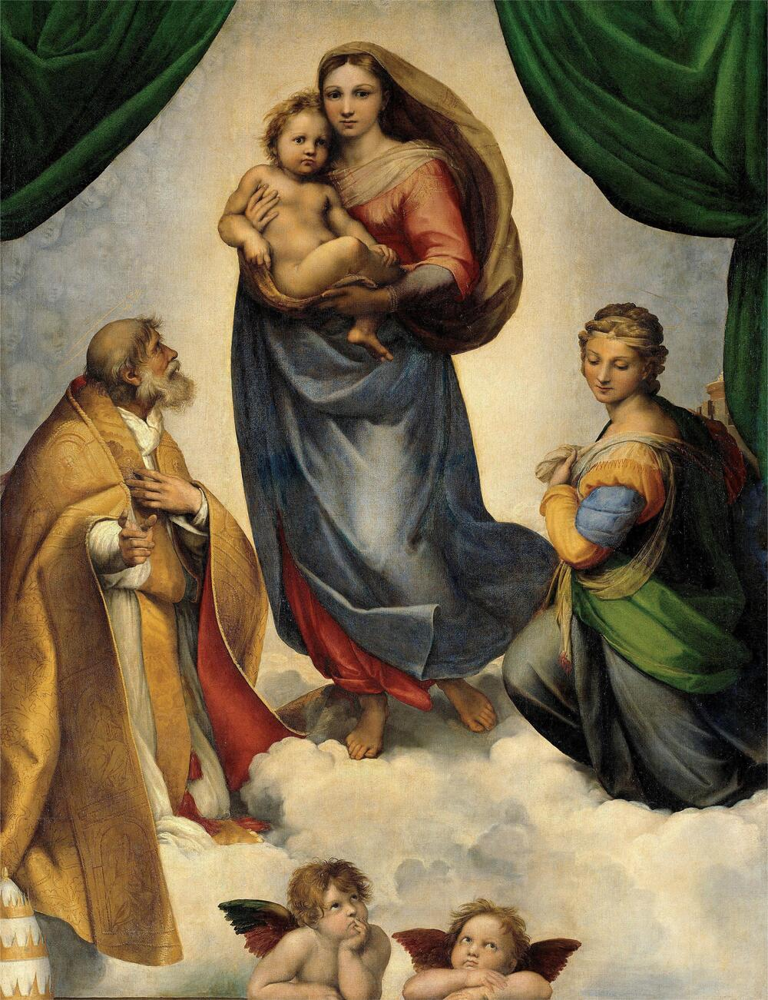
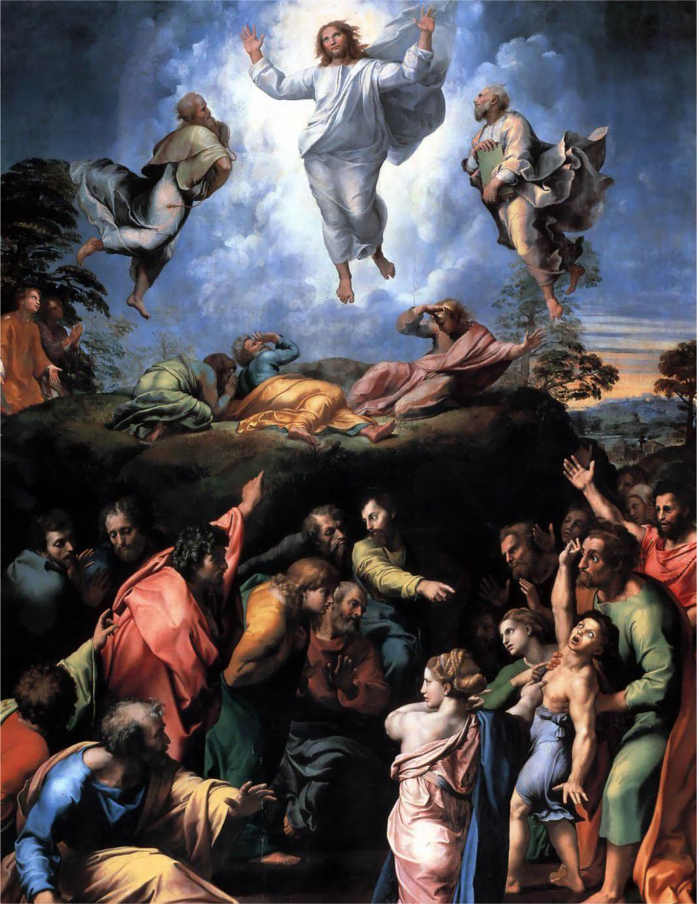
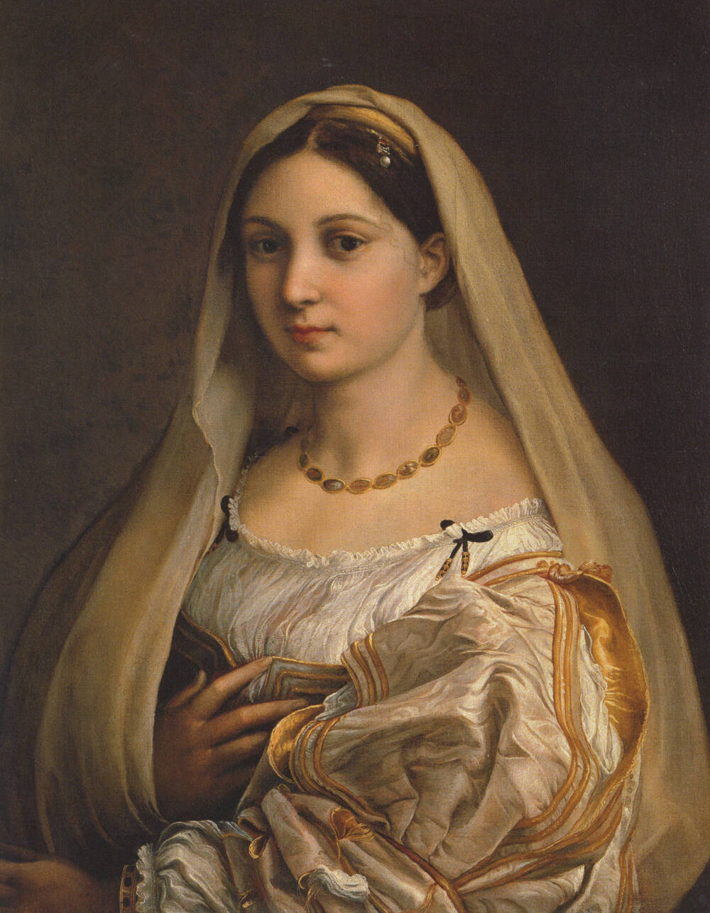

Michelangelo Merisi da Caravaggio
Michelangelo Merisi da Caravaggio, or simply Caravaggio, was an Italian Painter born in Milan, Italy, on September 29, 1571 until passing later on July 18, 1610. As an artist, Caravaggio was known as a revolutionary painter for the time of the renaissance as, unlike other artists who depicted the idealization of humans and religious experience, he painted in intense realism and strong contrasts between light and dark, or namely chiaroscuro. He was one of the first painters to use and master the technique, chiaroscuro, which later became the inspiration for Baroque art. Additionally, he is known for the unsettling atmosphere and realism in his style in painting the stories of the bible. However, Caravaggio was not only limited to painting Biblical themes, but depictions of death and sexual themes– which made his works to be rejected and considered vulgar and controversial by the church. While the many oeuvres he created were seen as crude and sold for little, Caravaggio continued to paint in his own distinctive style, which was revolutionary in itself as no other artist was as bold as him. Caravaggio’s first major piece was The Fortune Teller, and was introduced as a new style to other Roman artists; albeit became the footprint for artistic ranges in Roman Art. Whilst, Caravaggio’s most famous work is The Calling Of Saint Matthew, depicting the biblical event when Jesus calls Saint Matthew to become his apostle (Caravaggio.org, n.d.).
Famous Art Works Include...

Narcissus
(1597-1599)

Young Sick Bacchus
(1593-1594)

David with the head of Goliath
(1609-1610)

Raffaelo Sanzio (Raphael)
Raffaelo Sanzio da Urbino, most known as Raphael, was a renowned Italian painter born in Urbino on April 6, 1483 and later on passed April 6, 1520. Raphael was the son of an architect and court painter, Giovanni Santi and was trained by him from a young age (raphaelart.org, n.d.). Upon his father’s death, he inherited his father’s studio and continued his work and was influenced by other painters in his time such as Titian and Leonardo da Vinci, whose techniques later on shaped his approach to art. These influences became evident in his career as an artist, as his artworks showed the depiction of the holy family and humanist ideals; along with his style that was the epitome of the High Renaissance, characterized by the depth, harmonious proportions, rich colors, and balanced compositions in his artworks. Known for his paintings that were heavily influenced by the ideas of the High Renaissance and Mannerisms (Raphael Paintings, Bio, Ideas, n.d.), he showcased astonishing depth and lifelike texture to his paintings. Additionally, he showed masterful use in techniques such as sfumato modeling (which he had adapted from Leonard da Vinci), linear perspective, and pyramidal groupings that made his art resonate with its other elements. However, he was not only limited to humanist ideals, but also portrayed the divine victory of good over evil through dramatic religious imagery; often being angels triumphing over demons. Prominent artworks that convey this message include Saint Michael Vanquishing Satan, and St. Michael.
Famous Art Works Include...

Sistine Madonna
(1512)

The Transfiguration
(1520)

La Donna Velata
(1516)